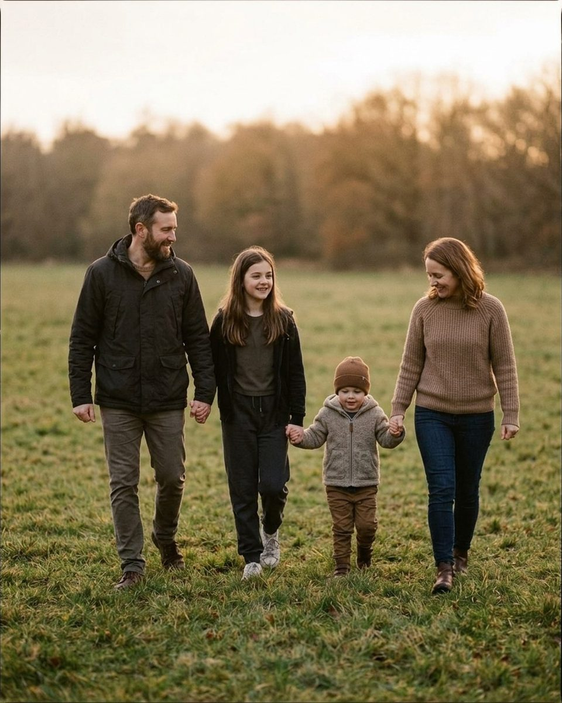
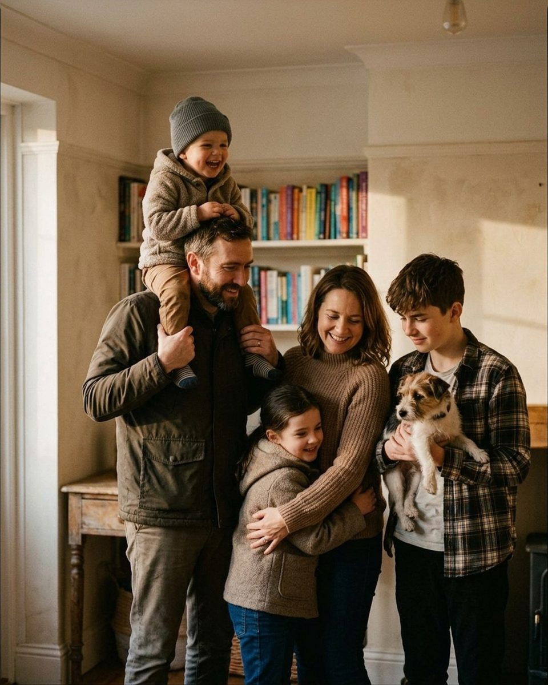

What to say to a dad who hates having his photo taken
The words that get a reluctant father through a family session without a single braced smile — every prompt copied straight from the Prompted catalog.
Most family sessions contain one person who did not choose to be there. Often it is the father, and often he agreed to forty-five minutes on a Saturday as a favor to someone else, having already said in the car that he is not photogenic. He is not being difficult. He holds a specific and, to him, well-evidenced belief that his face does something strange when a lens points at it, and he has three decades of school portraits and driver's license photos to support it. The common mistake is to treat this as an attitude to be jollied out of him, usually with more enthusiasm and more direct attention, which is exactly the wrong medicine. It is self-consciousness, and self-consciousness responds to one thing only: having something else to do. Almost none of the prompts below are addressed to him about his face. They hand him a child to lift, a wife to look at, a job with a start and a finish, and a reason for his eyes to be anywhere other than down the barrel of your lens. Every one is copied word for word from the Prompted catalog, with the pose it belongs to. Each reference image carries its own caption: the ones marked AI-generated are posing references rather than real session frames, and real galleries are being added through the contributor program as photographers submit their own work.

The two minutes before you lift the camera
The session is mostly decided before the first frame. If he arrives braced and nobody says anything about it, he will stay braced, and you will spend forty minutes photographing a man holding his breath. What helps is a line in the first two minutes that does two jobs at once: it shows him you have already noticed he would rather be elsewhere, and it shows you are not going to make that into a project. Then move on immediately — dwelling on it is worse than ignoring it. The three lines here are also the ones to use on his appearance, because appearance is what he is actually worried about. He is not afraid the photo will be badly composed. He is afraid it will look like him.
You don't need to fix his collar. I promise it reads as charming.
Nervous clientFrom the pose “Couch pile”
Say it to whoever reaches over to straighten him, which someone always does within the first minute. It stops the fussing, which is what was making him feel inspected, and it delivers a compliment to him sideways rather than to his face, where he would have to do something with it.
Messy hair stays in. It's proof you all actually live together.
Nervous clientFrom the pose “Sandwich hug”
Use it as a blanket policy announced to the whole group, not as reassurance aimed at him. Setting the standard out loud early means he is not privately wondering, forty minutes later, whether the shot was ruined by something he cannot see.
We'll get one photo where everyone smiles at me for Grandma. Then we play. Deal?
Nervous clientFrom the pose “Walk away holding hands”
This is the single most useful thing to say to a reluctant father, and it works because it is a contract with an end to it. He came to do one dreadful thing; you have just told him exactly how long the dreadful thing lasts. Take the posed frame first and genuinely release him from it afterwards, or the deal stops working next time.
Give him a job, not a feeling
Every direction you give a nervous adult falls into one of two categories, and only one of them is executable. "Look happy," "relax your shoulders," "act like you're having fun" all describe internal states, and a man who is certain he photographs badly cannot produce any of them on demand. What he can do is carry something, walk somewhere, hold a hand, or look at a particular person. A physical task occupies the part of him that was narrating his own face, and it produces a real shape for the camera instead of a performance of ease. The prompts in this section share one structure: a verb, an object, and no adjective about how it should feel.

Nobody has to look at the camera. Look at whoever you love most in this group.
Nervous clientFrom the pose “Group walk hold hands”
Give this to the whole family at once, immediately after the one posed frame you promised. Removing the requirement to face the lens removes the thing he has been dreading, and his eyes almost always land on a child, which is a better direction for his face than any instruction you could have given it.
You handle the hugging. I'll handle the timing.
Nervous clientFrom the pose “Race to camera”
Useful when he is visibly waiting for a cue and getting stiffer with every second of the wait. It splits the work into his half and yours, and his half is something he already does at home without thinking about it.
There's no wrong way to hold your kid. They'll show you where they fit.
Nervous clientFrom the pose “Toddler toss”
Say it the moment you see a father adjusting his grip on a child two or three times, checking your face after each attempt. He is treating his own child as a prop he might be holding incorrectly. This hands the decision back to the kid, who will settle within a few seconds.
Let the kids get heavy in your arms. Heavy is the picture.
CalmFrom the pose “Everyone look at baby”
Best once the pose is already built and everyone has been holding it a beat too long. It gives him permission to stop bracing, and the small sag of a child's real weight settling against a shoulder is the difference between a family standing near each other and a family holding each other.
Let the children do the work for you
A father who will not perform for you will nearly always react to his own children, and a reaction photographs better than a pose. This is the most reliable technique on the list: stop directing him and direct the kids instead, then point the camera at what happens to his face. It has a second advantage. He stops being the subject, which is the role he was dreading, and becomes the audience, which is a role he is comfortable in and has been playing for years.

Parents, you're just furniture right now. Comfortable, loving furniture.
Nervous clientFrom the pose “Story time circle”
Demote him on purpose. Told that he is scenery, a self-conscious father relaxes almost instantly, because scenery cannot be judged on its expression. Then shoot the parents, who by that point are the only unguarded faces in the frame.
Kids, bury Dad's feet. Dad, act like you haven't noticed.
PlayfulFrom the pose “Piggyback parade”
Works on sand, leaves or long grass, and works because he has been given a character to play rather than a feeling to have. Acting oblivious is easy; looking naturally amused is not. The amusement arrives on its own about four seconds in.
The kids don't have to sit still. Chase them. I'll keep up.
Nervous clientFrom the pose “Ring around parents”
Save this for the moment the youngest breaks formation and a parent starts apologizing. It converts the thing he was embarrassed about into the assignment, and a father who is running is a father who has completely forgotten about his own face.
Look at the little one and just watch them for a minute.
CalmFrom the pose “Bench row”
A quiet counterweight to the loud prompts, and often the frame the family orders large. Give it a real minute rather than the four seconds it feels like you can spare, and stay far enough back that he forgets you are still shooting.
The lines that get a real laugh out of him
A genuine laugh is the only expression a self-conscious adult cannot fake and cannot ruin, which makes it worth more than any number of reassurances. The reliable route to one is not a joke told by you — he is not in the mood to be entertained by a stranger with a camera — but a small dare he has to attempt in front of his family. Succeeding at it is funny. Failing at it is funnier. Either way the laugh belongs to the room rather than to the photographer, and that is why it looks real.

Everyone jump on three — Dad, you especially.
PlayfulFrom the pose “Shoulder ride”
One of the few prompts that names him directly, and it survives the naming because what follows is an instruction rather than an observation about him. Shoot the landing as well as the jump; the landing is where the laughing is.
Dad, give me your best funny face or sound on the count of three. One, two, three!
PlayfulFrom the pose “Between shoulders giggle”
Use it only after he has warmed up, never in the first ten minutes, when it would land as a demand to perform. Keep the camera on the children while you count. Their reaction is the photograph, and knowing that takes the weight off whatever face he produces.
Whoever laughs first has to do the dishes tonight.
PlayfulFrom the pose “Couch pile”
For a family that runs competitive, which most do. The stakes are low enough to be obviously a joke and real enough that everyone tries to win, and trying not to laugh produces a better face than trying to laugh ever has.
Race to that tree and back. Parents, you're allowed to lose.
PlayfulFrom the pose “Bench row”
A mid-session reset for when energy flags and everyone starts checking how much longer this will take. Give the tree a name and a distance so nobody has to interpret. Shoot the return leg, when the running is honest and nobody is arranging their shoulders.
The two frames he will actually keep
Ask a reluctant father afterwards which photographs he liked and the answer is rarely the one everyone was posed for. It tends to be a frame with his wife in it, or one where he is looking at a child and does not appear to know he is being photographed. Those two are worth deliberately going after near the end of the session, when he has spent half an hour learning that nothing bad has happened yet. Both of the prompts below point his attention at another adult, which is the last thing he will be comfortable doing and the thing most likely to produce a photograph he wants on a wall.

Mom, Dad — look at each other. The kids will do the rest, I promise.
Nervous clientFrom the pose “Parents kiss kids react”
The second half of the line is doing the work: it tells him the children will supply the entertainment so he does not have to. Step back and wait. The children reliably interrupt within a few seconds, and the interruption is the frame.
You don't need to look at me at all—just focus entirely on making her laugh.
Nervous clientFrom the pose “Between shoulders giggle”
This gives him a target that is not the camera and a measurable goal that is not his own expression. Men who insist they are bad at photos are frequently good at this specific job, and they know it, which is why the instruction tends to land as a relief rather than a request.
Squeeze in close and take one big family breath together.
CalmFrom the pose “Tailgate sit”
A closer for the last few frames, once everyone is tired. The shared breath does the posture work that "stand up straight" would have wrecked, and the exhale is the moment to shoot — shoulders drop on an exhale and faces stop holding anything.
What not to say
Three habits undo everything above. The first is "just relax," which names the problem without solving it and confirms that you have been watching him struggle. The second is any compliment about his face, delivered to his face, in front of his family — "you're doing great, that's a good smile" tells him the smile was being assessed, and the next one will be worse. The third is apologizing for how long the session is taking, which resets the clock in his head and reminds him that he is enduring something. Say nothing about the length, keep the deal you made in the first two minutes, and let the finish come early rather than late. If he leaves thinking it was shorter and less painful than he expected, the next family session in that household is booked on easier terms, which matters more to your calendar than any single frame from this one. The same task-over-feeling logic runs through 20 things to say to get natural smiles at a family session and, at the other end of the age range, directing kids without bribing them.
The Fall Mini Session Shot List
About 25 poses grouped by family size, each with the words to say. A free PDF, sent once you confirm your address.
One email to confirm, one with the PDF. Unsubscribe any time. No selling, no sharing.
Every prompt in this guide is in the app, with the pose it belongs to.
Prompted is the posing app that is only a posing app: 250+ poses, each with word-for-word prompts in four tones, filtered to the light you're standing in. The sun tracker is free forever.
Get Prompted on the App Store